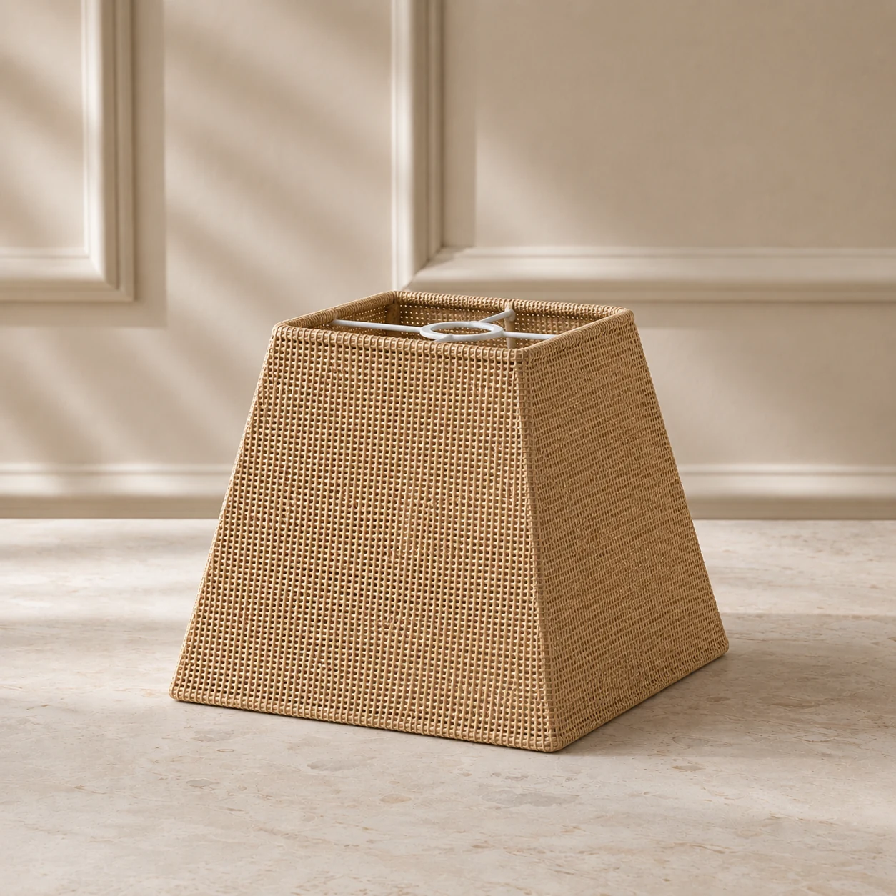

Catálogo configurável
Modelos de cúpulas para abajur e luminárias
sob medida
Escolha o formato, personalize o tecido e as medidas, consulte o preço e siga ao carrinho. Também temos referências prontas para facilitar a escolha.
Explore por formato
Escolha a linha que combina com sua luminária.
Veja as diferenças entre os modelos, conheça acabamentos e comece uma configuração com o formato pré-selecionado.
 Cúpulas cônicasProporção clássica para abajures e luminárias.↗
Cúpulas cônicasProporção clássica para abajures e luminárias.↗
 Cúpulas cilíndricasModelo Drum de linhas retas e visual equilibrado.↗
Cúpulas cilíndricasModelo Drum de linhas retas e visual equilibrado.↗

Cúpulas quadradasPerfis retos e piramidais para diferentes projetos.↗ Cúpulas retangularesModelos para abajures e luminárias sob medida.↗
Cúpulas retangularesModelos para abajures e luminárias sob medida.↗
Encomendas em quantidade? Conheça nossa fabricação para lojistas e projetos ↗
Do seu jeito
Monte sua cúpula
Escolha formato, material, medidas e quantidade, veja a estimativa e adicione a cúpula ao seu pedido. Como tirar as medidas ↗
Referências sugeridas
Modelos, medidas e referências de cúpulas
Compare formatos e proporções para encontrar uma boa referência. Cada modelo pode servir como ponto de partida para ajustar medidas, material, cor e acabamento conforme o projeto.
Carregando referências
Formato e medidas sugeridos por referênciaNenhuma referência encontrada
Tente outra referência ou combinação de medidas.
Escolha com mais segurança
Cúpulas sob medida para peça avulsa, projetos e atacado
As referências do catálogo ajudam a comparar proporções e formatos antes de configurar seu pedido. Medidas personalizadas também são possíveis, podendo exigir avaliação da fábrica.
-
01 · FORMATOS
Cônicas, cilíndricas, quadradas e retangulares
Escolha o formato de acordo com o abajur, luminária, pendente ou proposta de decoração.
-
02 · MEDIDAS
Referência pronta ou produção sob medida
Use uma medida sugerida como ponto de partida ou informe as dimensões necessárias para avaliação da fábrica.
-
03 · QUANTIDADE
De uma peça a pedidos em quantidade
Atendemos clientes finais, projetos personalizados, lojistas e encomendas em maior volume.
Já possui uma cúpula e quer recuperar a peça? Conheça nosso serviço de reforma de cúpulas para abajures e luminárias. Para entender a produção, veja também nossa fabricação de cúpulas sob medida.
Precisa de orientação?
Fale diretamente com a Center
A equipe pode ajudar a organizar a especificação do seu projeto para avaliação da fábrica.
Falar pelo WhatsApp